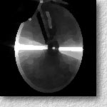

 Relighting with the Reflected Irradiance Field:
Representation, Sampling and Reconstruction, and ,
International Journal of Computer Vision, Vol. 49, No. 2-3, September-October 2002, pp. 229-246.
(This is the extended version of our paper published in CVPR 2001)Abstract
- Image-based relighting (IBL) is a technique to change the illumination of an image-based object/scene. In this paper, we define a representation called the reflected irradiance field which records the light reflected from a scene as viewed at a fixed viewpoint as a result of moving a point light source on a plane. It synthesizes a novel image under a different illumination by interpolating and superimposing appropriate recorded samples. Furthermore, we study the minimum sampling problem of the reflected irradiance field, i.e., how many light source positions are needed. We find that there exists a geometry-independent bound for the sampling interval whenever the second-order derivatives of the surface BRDF and the minimum depth of the scene are bounded. This bound ensures that when the novel light source is on the plane, the error in the reconstructed image is controlled by a given tolerance, regardless of the geometry. We also analyze the bound of depth error so that the extra reconstruction error can also be governed when the novel light source is off-plane. Experiments on both synthetic and real surfaces are conducted to verify our analysis.
Interactive Demo
Click here for downloading and installing the demo program. You need a GeForce 2 or above graphics board and the board should be equipped with 64 MB or more memory.
Download Paper
- Acrobat: illusam2.pdf
Related Publication